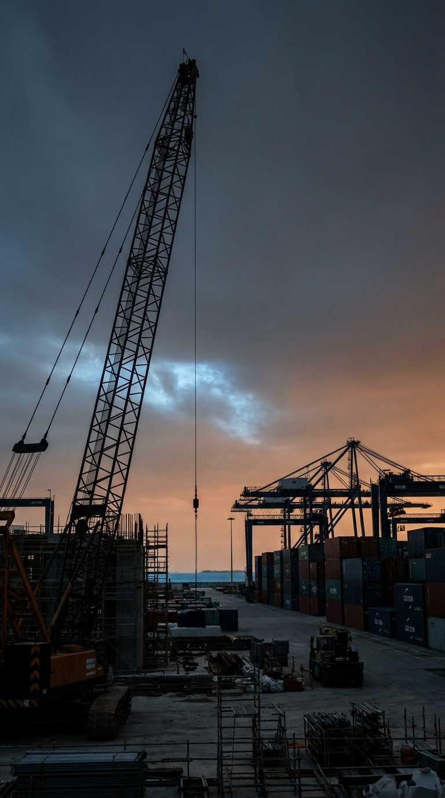
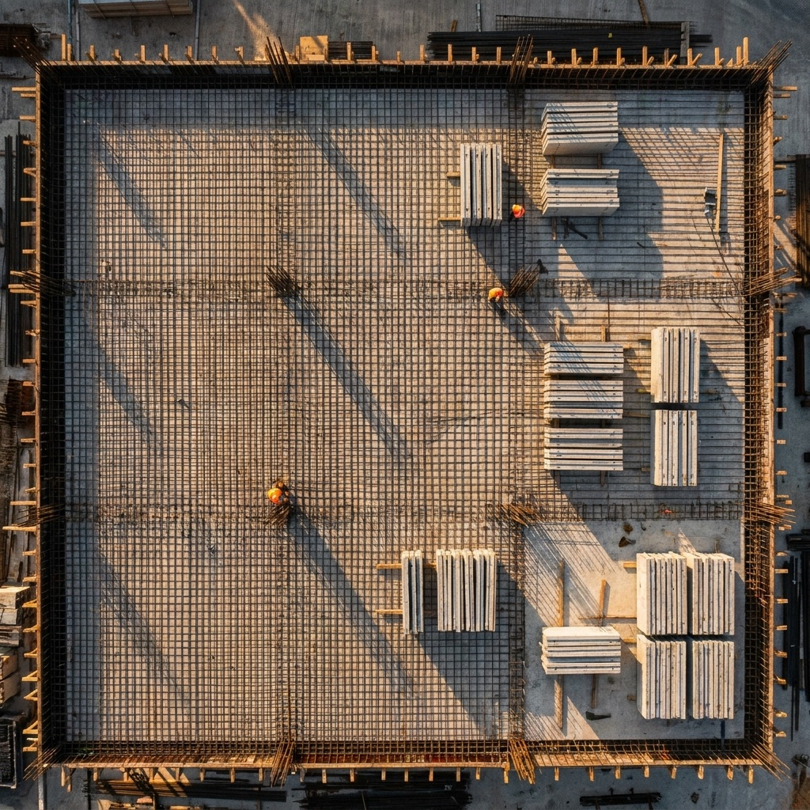
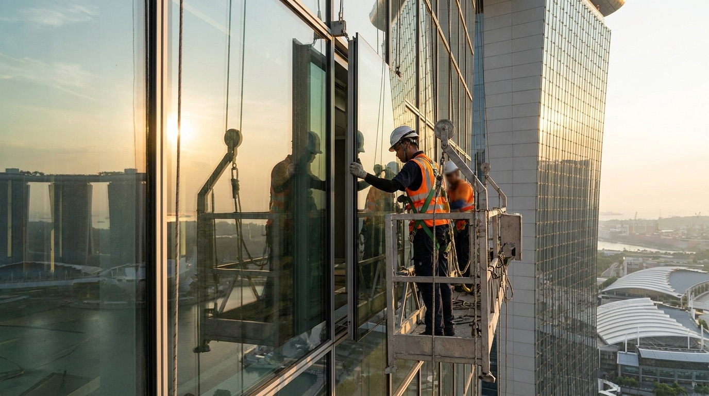

Singapore construction demand maps cleanly to three demand-shapes. Public agencies anchor ~55% of value with explicit QP(S) tender packages. Private developers and main contractors compress the cycle through repeat relationships. Specialist projects — PPVC, MET, datacentre M&E, complex façade — pay 20–35% above standard rates.
Reference: Cross Island Line Phase 1 Package 2 supervision tender — S$18.2M awarded across 5 firms (Mar 2022). Active CIL Ph2/3 packages running through 2030.
Multi-year RTO/RE supply contracts in S$0.5–3M range. Better suited as beachhead for new entrants than mega-tenders. Specialist supervision premium for PPVC.
JTC industrial parks; PUB water reclamation Phase 2; CAG Changi infrastructure. Long-cycle, multi-package, framework-friendly.
Pricing is more flexible and decisions move faster than public tenders. Volumes per engagement are smaller, but continuity and predictable rates matter most.
| Account | Engagement preference |
|---|---|
| CapitaLand | Framework agreements |
| City Developments | Project-by-project |
| Frasers Property | Multi-project pipeline |
| GuocoLand | Mid-size institutional |
| Far East Organization | Residential portfolio |
| TGC · Bukit Sembawang · Roxy-Pacific · Hong Leong Holdings | Anchor A — multi-project pipeline target |
| Account | Engagement preference |
|---|---|
| Kimly Construction | Mid-size BCA-listed |
| Kajima | Japan-Asia signature projects |
| Soilbuild | Industrial & logistics |
| Woh Hup | Residential, mixed-use |
| Lum Chang | Residential, infrastructure |
| Tier 1–3 consultancies (WSP, Beca, RSP, Surbana Jurong) — Anchor B archetype, post non-compete clearance. | |
PPVC, MET (Mass Engineered Timber), advanced steel, complex façade, and datacentre M&E projects require specialist supervision competency. Pricing typically runs 20–35% above standard rates. Few competitors are positioned for this — and Adept Academy specialist tracks (PPVC, post-tensioning, structural steel) become a direct revenue lever from Year 2.
HDB BTO programme uses PPVC extensively. Specialist supervision required at module manufacturing yards and on-site assembly. Year-2 specialist track.
Increasingly used in tall building construction. Niche supervision competency. Premium pricing tier.
M&E-intensive. Premium-priced. Margin upside 5–8 percentage points vs. C&S baseline.
Marina Bay Sands expansion, Changi Jewel-class projects. Specialist façade supervisors command project-end bonuses.
Earth Retaining Stabilising Structures (ERSS), pre-stressing, geotechnical instrumentation. Specialist RTO competence.
High-rise residential and commercial. Adept Academy specialist track in development with BCA Academy partnership.
Whether public-sector framework, private developer pipeline, or specialist subcontractor on a signature project — talk to us about Year-1 deployment slots.
Three frames from the segments we serve: a Tuas-class infrastructure cranescape, an HDB BTO podium aerial at golden hour, and a façade specialist on a swing stage above the city — public, public-aerial, specialist 20–35% premium.


